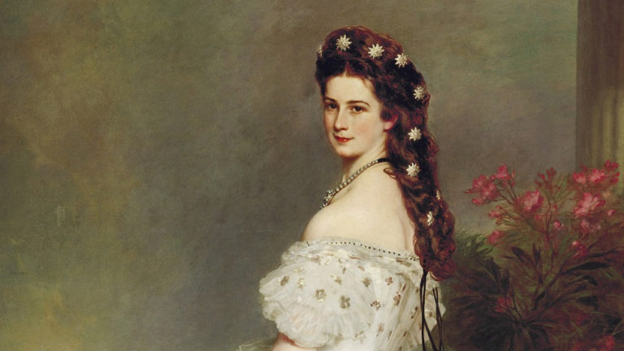

Sissi Quiz

Să ne testăm cunoștințele!
Scor 0 / 10
1.Care era numele complet al împărătesei Sisi?
Quiz Result!
0%
Your Score 0 out of 10
SISSI QUIZ
Iată un quiz despre Împărăteasa Sisi (Elisabeta a Austriei), una dintre cele mai fascinante și enigmatice figuri din istorie. Testează-ți cunoștințele despre viața, personalitatea și influența sa!